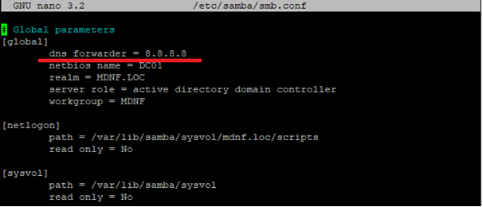

Nom de domaine : mdnf.loc
Nom du serveur : dc01
@IP dc01 : 192.168.74.100
Utilisez Putty pour vous connecter au serveur en utilisant l'adresse IP fixe configurée.
Assurez-vous d'avoir un compte utilisateur avec les privilèges sudo (dans cet exemple, le compte "olivier").
sudo apt-get install locales-all
sudo localectl set-locale LANG=en_US.utf8
Pour vérifier :
localectl status
sudo nano /etc/hostname
Ajoutez le nom complet du domaine (Fully Qualified Domain Name - FQDN) du serveur : "nom-du-serveur.nom-de-domaine"
Dc01.mdnf.loc
sudo nano /etc/hosts
Ajoutez le FQDN du serveur et son adresse IP :
192.168.74.100 dc01.mdnf.loc
Ouvrez le fichier /etc/network/interfaces avec les privilèges sudo :
sudo nano /etc/network/interfaces
Ajoutez ou modifiez les lignes suivantes :
address 192.168.74.100
netmask 255.255.255.0
network 192.168.74.0
gateway 192.168.74.254
sudo reboot
Mettez à jour la liste des paquets pour vous assurer d'avoir les dernières versions disponibles :
sudo apt update
Installez les utilitaires en utilisant la commande suivante :
sudo apt install -y wget screen nmap telnet tcpdump rsync net-tools dnsutils htop
Installez les paquets apt-transport-https et gnupg :
sudo apt install apt-transport-https gnupg
Téléchargez la clé publique du dépôt Tranquil IT :
sudo wget -O tissamba-pubkey.gpg http://samba.tranquil.it/tissamba-pubkey.gpg
Vérifiez la somme de contrôle SHA256 de la clé téléchargée :
sha256sum tissamba-pubkey.gpg
Ajoutez la clé publique au trousseau de clés APT :
sudo apt-key add tissamba-pubkey.gpg
Ajoutez le dépôt Tranquil IT à la liste des sources APT :
sudo sh -c 'echo "deb https://samba.tranquil.it/debian/samba-4.18/ $(lsb_release -c -s) main" > /etc/apt/sources.list.d/tissamba.list'
Mettez à jour la liste des paquets :
sudo apt update
Exportez la variable DEBIAN_FRONTEND :
export DEBIAN_FRONTEND=noninteractive
Mettez à jour la liste des paquets :
sudo apt-get update
Installez les paquets nécessaires :
sudo apt-get install samba winbind libnss-winbind krb5-user smbclient ldb-tools python3-cryptography
Réinitialisez la variable DEBIAN_FRONTEND :
unset DEBIAN_FRONTEND
sudo nano /etc/krb5.conf
Effacez le contenu du fichier et ajoutez les lignes suivantes :
[libdefaults]
default_realm = MDNF.LOC
dns_lookup_kdc = true
dns_lookup_realm = false
Supprimez le fichier de configuration par défaut de Samba :
sudo rm -f /etc/samba/smb.conf
Créez un nouveau fichier de configuration Samba :
sudo nano /etc/samba/smb.conf
Personnalisez le fichier de configuration selon votre environnement en suivant la documentation officielle de Samba pour configurer votre contrôleur de domaine.
Redémarrez les services Samba et Kerberos pour appliquer les modifications :
sudo systemctl restart samba
sudo systemctl restart smbd
sudo systemctl restart nmbd
sudo systemctl restart winbind
Utilisez la commande samba-tool pour définir le mot de passe du compte administrateur :
sudo samba-tool user setpassword administrator
Tapez le mot de passe souhaité, par exemple : Pa$$word
Modifiez le fichier de configuration Samba :
sudo nano /etc/samba/smb.conf
Recherchez et modifiez la ligne "dns forwarder" pour utiliser l'adresse IP souhaitée :
dns forwarder = 8.8.8.8

Modifiez le fichier /etc/resolv.conf :
sudo nano /etc/resolv.conf
Ajoutez ou modifiez les lignes suivantes :
search mdnf.loc
nameserver 127.0.0.1
Supprimez le fichier inutile généré par le script :
sudo rm -f /var/lib/samba/private/krb5.conf
Remplacez le fichier supprimé par un lien symbolique :
sudo ln -s /etc/krb5.conf /var/lib/samba/private/krb5.conf
Démasquez le service samba-ad-dc :
sudo systemctl unmask samba-ad-dc
Activez le service samba-ad-dc :
sudo systemctl enable samba-ad-dc
Désactivez les services samba, winbind, nmbd et smbd :
sudo systemctl disable samba winbind nmbd smbd
Masquez les services samba, winbind, nmbd et smbd :
sudo systemctl mask samba winbind nmbd smbd
Redémarrez la machine pour appliquer les changements :
sudo reboot
Testez le compte administrateur de Samba (administrator) après le redémarrage :
sudo kinit administrator
Désactivez le pare-feu (si nécessaire) :
sudo ufw disable
Sur le client Windows 10, faites un clic droit sur le menu Démarrer et sélectionnez Système.
Cliquez sur "Renommer ce PC" et choisissez l'option avancée.
Dans l'onglet "Modification du nom ou du domaine de l'ordinateur", sélectionnez "Domaine" et saisissez "Mdnf".
Renseignez les identifiants : administrator et le mot de passe défini précédemment.
Vous devriez maintenant être accueilli dans le domaine "mdnf".
Après le redémarrage, connectez-vous au client Windows avec le compte administrateur au domaine.
Vérifiez que vous êtes bien dans le domaine en affichant les propriétés système.
Accédez au menu Démarrer, puis à Paramètres, Applications, Fonctionnalités facultatives.
Cliquez sur "Ajouter une fonctionnalité" et recherchez "rsat".
Cocher les services à installer, notamment "RSAT : outils Active Directory Domain Services Directory et services LDS (Lightweight Directory Services)".
Procédez à l'installation des fonctionnalités RSAT.
Vous pouvez maintenant utiliser les outils RSAT installés pour administrer le domaine.